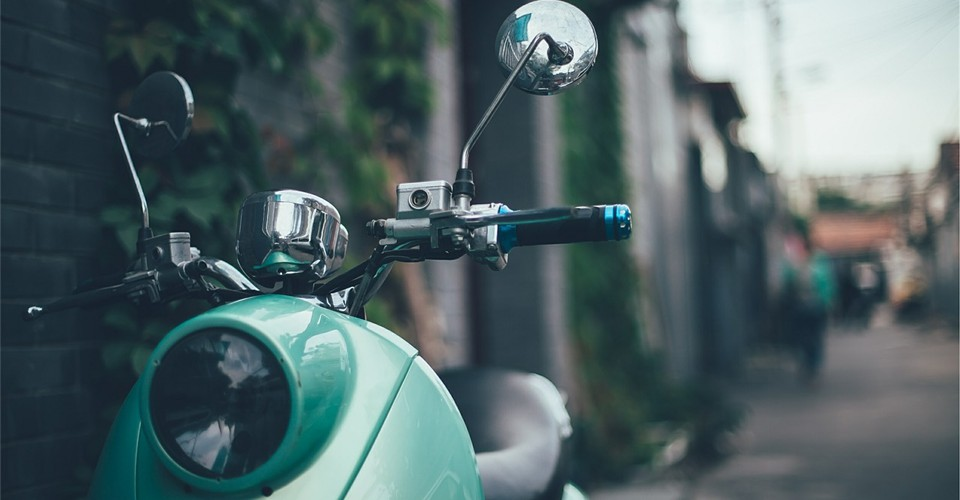

Título de la página web: Tu Portal Integral de Deportes y Salud Subtítulo: Mejora tu bienestar físico y mental con consejos, noticias y guías de expertos. Introducción: ¿Estás buscando mejorar tu salud y bienestar general? ¿Te apasionan los deportes y buscas estar al día con las últimas noticias y tendencias? ¡En Tu Portal Integral de Deportes y Salud encontrarás todo lo que necesitas para alcanzar tus objetivos! ¿Qué ofrecemos? En nuestro sitio web encontrarás una amplia variedad de contenido relacionado con deportes y salud, incluyendo: Artículos informativos: Escritos por expertos en salud y deporte, te brindarán información actualizada sobre diversos temas como: Nutrición y alimentación saludable Entrenamiento y rutinas de ejercicio Prevención de lesiones Psicología deportiva Bienestar mental Y mucho más Noticias deportivas: Mantente informado sobre los últimos eventos deportivos, resultados, análisis y entrevistas exclusivas a atletas y personalidades del mundo del deporte. Guías y tutoriales: Te guiaremos paso a paso para que puedas realizar ejercicios de manera segura y efectiva, aprender nuevas técnicas deportivas y mejorar tu rendimiento. Consejos prácticos: Te compartiremos tips y recomendaciones para que puedas adoptar un estilo de vida más saludable y activo. Recetas saludables: Descubre deliciosas y nutritivas recetas que te ayudarán a alcanzar tus metas de salud. Comunidad online: Únete a nuestra comunidad de amantes del deporte y la salud para compartir experiencias, hacer preguntas y recibir apoyo.